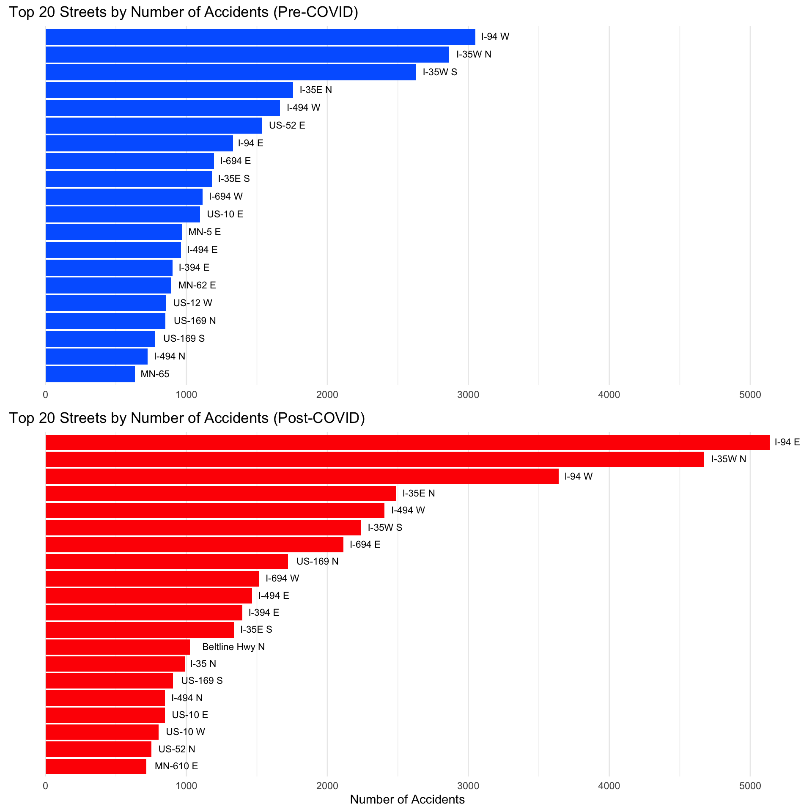

# read in the original, national dataset
# US_Accidents_March23 <- read_csv("US_Accidents_March23.csv")
# subset Minnesota
# mn <- US_Accidents_March23 %>%
# filter(State == "MN")
# write_csv(mn, "mn.csv")
# mn <- read_csv("mn.csv")
# mn <- mn %>% select(-"ID", -"Source", -"State", -"Country")
# subset counties in the Twin Cities metro area
# met <- mn %>%
# filter(County %in% c('Anoka', 'Carver', 'Dakota', 'Hennepin', 'Ramsey',
# 'Scott', 'Washington'))
# write_csv(met, "met.csv")
met = read_csv("met.csv")
# Sample 1000 random rows for testing purposes
# met_1k <- met %>% sample_n(1000)
# write_csv(met_1k, "met_1k.csv")
# Load the shapefile for streets
streets <- st_read("./streets/STREETS_LOAD.shp")
# Load the shape file for county boundaries
counties <- st_read("counties/mn_county_boundaries_1000.shp")Traffic Accidents in the Twin Cities Before and After COVID
This dataset contains records of traffic accidents for the seven-county region overseen by the metropolitan council of the Twin Cities.
Traffic Accident data source: Sobhan Moosavi. (2023). US Accidents (2016 - 2023) [Data set]. Kaggle. https://doi.org/10.34740/KAGGLE/DS/199387
Minnesota shape files came from https://gisdata.mn.gov/organization/us-mn-state-dot
Loading the data and creating new variables
# Creating New Variables
# Create COVID variable
met$post_covid <- ifelse(met$Start_Time < as.POSIXct("2020-03-01", tz = "UTC-6"),
0, 1)
# Day of week variable (0 = Sunday, 6 = Saturday)
met$Day_of_Week <- as.integer(format(met$Start_Time, "%w"))
# Create the binary 'weekday' variable (1 for weekdays, 0 for weekends)
met$is_weekday <- ifelse(met$Day_of_Week >= 1 & met$Day_of_Week <= 5, 1, 0)
# Month variable
met$Month <- as.integer(format(met$Start_Time, "%m"))
# Create the 'season' variable
met$season <- ifelse(met$Month %in% c(3, 4, 5), "Spring",
ifelse(met$Month %in% c(6, 7, 8), "Summer",
ifelse(met$Month %in% c(9, 10, 11), "Autumn",
"Winter")))
# Create rush hour variable
# Extract hour from the Start_Time column
met$start_hour <- as.integer(format(met$Start_Time, "%H"))
# rush hour variable, 1 if the hour is between 6 and 9 or between 15 and 18 on weekdays, 0 otherwise
met$rush_hr <- ifelse(met$is_weekday == 1 & (met$start_hour >= 6 & met$start_hour <= 9 | met$start_hour >= 15 & met$start_hour <= 18), 1, 0)
# Drop no longer needed variables
met$Day_of_Week <- NULL
met$Month <- NULL# Convert the data frame to an sf object
met_sf <- st_as_sf(met, coords = c("Start_Lng", "Start_Lat"), crs = 4326, agr = "constant")
# Check the CRS for both datasets
crs_streets <- st_crs(streets)
crs_met <- st_crs(met_sf)
# Transform the projection of the accidents data to match the streets data, if different
if (crs_streets$epsg != crs_met$epsg) {
met_sf <- st_transform(met_sf, crs_streets)
}
# Remove extra dimensions from spatial data
streets <- sf::st_zm(streets)
counties <- sf::st_zm(counties)
met_sf <- sf::st_zm(met_sf)Exploratory data analysis
In Spring of 2020 there was a noticeable shift in traffic patterns as a result of the COVID-19 pandemic. Many people were no longer commuting to work everyday, and years later this trend continues as working from home becomes more accepted as a permanent change. Understanding how the shift in traffic patterns affects the characteristics of car accidents will allow us to better allocate public funds for traffic engineering projects and hopefully minimize the rate and severity of accidents.
Locations of Traffic Accidents in Twin Cities Metro (June 2016 through March 2023)
# Get the bounding box of the accidents data
bbox_met <- st_bbox(met_sf)
# Accident Map TC metro
ggplot() +
geom_sf(data = streets) +
geom_sf(data = counties, color = "green4", fill = NA, size = 5) +
geom_sf(data = met_sf, aes(color = factor(post_covid)), size = .8, alpha = .5) +
scale_color_manual(
values = c("0" = "#0066FF", "1" = "red"),
name = "COVID Period",
labels = c("0" = "Pre-COVID", "1" = "Post-COVID")
) +
geom_sf_label(data = counties, aes(label = CTY_NAME), size = 4, color = "green4") +
coord_sf(xlim = bbox_met[c('xmin', 'xmax')], ylim = bbox_met[c('ymin', 'ymax')], expand = FALSE) +
ggtitle("Locations of Traffic Accidents in Twin Cities Metro (June 2016 through March 2023)") +
theme(
plot.title = element_text(size = rel(1.5)),
axis.title.x = element_blank(),
axis.title.y = element_blank(),
legend.text = element_text(size = 12),
legend.title = element_text(size = 14)) +
guides(color = guide_legend(override.aes = list(size = 5)))It appears that after COVID, a greater proportion of accidents may be happening in the suburbs as fewer people commute to the core cities. Indeed, pre-COVID 72.2% of accidents in the metro occurred in just Hennepin and Ramsey counties, while post-COVID the proportion was down to 69.1%
Top 20 Streets by Number of Accidents, Before & After COVID
# Filter accidents pre-covid
accidents_pre_covid <- met %>%
filter(post_covid == 0)
# Filter accidents post-covid
accidents_post_covid <- met %>%
filter(post_covid == 1)
# Get the count of accidents for each street pre-covid
top20_pre_covid <- accidents_pre_covid %>%
count(Street) %>%
top_n(20, n)
# Get the count of accidents for each street post-covid
top20_post_covid <- accidents_post_covid %>%
count(Street) %>%
top_n(20, n)
# Find the maximum number of accidents to set the same x-axis limit for both plots
max_accidents <- max(c(top20_pre_covid$n, top20_post_covid$n))
# Pre-COVID plot
plot_pre_covid <- ggplot(top20_pre_covid, aes(x = reorder(Street, n), y = n)) +
geom_bar(stat = "identity", fill = "#0066FF") +
geom_text(aes(label = Street), vjust = 0.4, hjust = -0.2, color = "black", size = 3.0) +
coord_flip() +
labs(title = "Top 20 Streets by Number of Accidents (Pre-COVID)", x = NULL, y = NULL) +
ylim(0, max_accidents) +
theme_minimal() +
theme(
axis.text.x = element_text(angle = 0),
axis.text.y = element_blank(),
axis.ticks.y = element_blank(),
panel.grid.major.y = element_blank(),
panel.grid.minor.y = element_blank()
)
# Post-COVID plot
plot_post_covid <- ggplot(top20_post_covid, aes(x = reorder(Street, n), y = n)) +
geom_bar(stat = "identity", fill = "red") +
geom_text(aes(label = Street), vjust = 0.4, hjust = -0.2, color = "black", size = 3.0) +
coord_flip() +
labs(title = "Top 20 Streets by Number of Accidents (Post-COVID)", x = NULL, y = "Number of Accidents") +
ylim(0, max_accidents) +
theme_minimal() +
theme(
axis.text.x = element_text(angle = 0),
axis.text.y = element_blank(),
axis.ticks.y = element_blank(),
panel.grid.major.y = element_blank(),
panel.grid.minor.y = element_blank()
)
# Align the plots vertically
grid.arrange(plot_pre_covid, plot_post_covid, ncol = 1)
These counts by street are for the entire periods of June 2016 through February 2020, and March 2020 through March 2023, pertaining to the pre and post COVID periods, respectively. This means there are 45 months worth of data for the pre-COVID period and 37 months of data for the post-COVID period.
Weekly Accidents Rate in the Twin Cities Metro
# Get weekly incidents by season
weekly_incidents_by_season <- met %>%
mutate(Week = as.Date(floor_date(Start_Time, "week"))) %>%
group_by(Week, season, post_covid) %>%
summarise(Incidents = n(), .groups = 'drop') %>%
ungroup() %>%
arrange(Week, season, post_covid)
# Reorder the 'season' variable
weekly_incidents_by_season$season <- factor(weekly_incidents_by_season$season,
levels = c("Spring", "Summer", "Autumn", "Winter"))
# Define date limits for the plot
start_date <- as.Date("2016-06-01")
end_date <- as.Date("2023-03-31")
# Line plot
ggplot(weekly_incidents_by_season, aes(x = Week, y = Incidents)) +
geom_segment(aes(xend = lead(Week), yend = lead(Incidents), color = season), size = .5) +
scale_color_manual(name = "Season",
values = c("Spring" = "green", "Summer" = "red",
"Autumn" = "orange", "Winter" = "blue")) +
ggtitle("Weekly Accident Rate in the Twin Cities Metro") +
xlab("") +
ylab("Number of Accidents") +
scale_x_date(date_breaks = '1 month', date_labels = "%b %Y",
limits = c(start_date, end_date),
expand = c(0, 0)) +
theme_minimal() +
theme(axis.text.x = element_text(angle = 90, hjust = 1, vjust=0.5, size = rel(0.8))) +
geom_smooth(data = subset(weekly_incidents_by_season, post_covid == 0),
aes(x = Week, y = Incidents, linetype = "Pre-Covid"),
method = "lm", se = FALSE, color = "darkgray") +
geom_smooth(data = subset(weekly_incidents_by_season, post_covid == 1),
aes(x = Week, y = Incidents, linetype = "Post-Covid"),
method = "lm", se = FALSE, color = "black") +
scale_linetype_manual(name = "Trend Lines",
values = c("Pre-Covid" = "dashed", "Post-Covid" = "dashed"),
labels = c("Pre-Covid", "Post-Covid"),
guide = guide_legend(override.aes = list(color = c("Pre-Covid" = "darkgray", "Post-Covid" = "black"))))The weekly accident rate was trending upwards pre-COVID, but theres a noticeable shift during the post-COVID period as the trend seems to flatten out while the seasonality becomes more pronounced.
Number of Accidents by Hour of Day
# Create data frames with counts of incidents for each hour, pre and post Covid
hourly_incidents_pre_covid <- met %>%
filter(post_covid == 0) %>%
group_by(start_hour) %>%
summarise(Count = n())
hourly_incidents_post_covid <- met %>%
filter(post_covid == 1) %>%
group_by(start_hour) %>%
summarise(Count = n())
# Combine the data
combined_hourly_incidents <- bind_rows(
mutate(hourly_incidents_pre_covid, Period = "Pre-Covid"),
mutate(hourly_incidents_post_covid, Period = "Post-Covid")
)
# Convert 'Period' to a factor with levels in the desired order
combined_hourly_incidents$Period <- factor(combined_hourly_incidents$Period,
levels = c("Pre-Covid", "Post-Covid"))
# Line plot of incidents by hour of the day
ggplot(combined_hourly_incidents, aes(x=start_hour, y=Count, color=Period)) +
geom_smooth(se=F, method = "loess", span = 0.2) +
scale_color_manual(values=c("#0066FF", "red")) +
ggtitle("Number of Accidents by Hour of the Day") +
xlab("Hour of the Day") +
ylab("Number of Accidents") +
theme_minimal() +
theme(legend.position="top")Reminder: there are 45 months worth of data for the pre-COVID period and 37 months of data for the post-COVID period. I believe the length of these two periods are close enough for general comparison purposes, but its important to note that all else being equal, there should be higher counts in the pre-COVID period. However, there are actually 65,459 accidents recorded post-COVID compared with only 56,054 pre-COVID.
Length of Section of Road Affected When Accidents Occur
# Boxplots for length of road affected
ggplot(met, aes(y = factor(post_covid, levels = c(1, 0)), x = `Distance(mi)`, fill = factor(post_covid, levels = c(1, 0)))) +
geom_boxplot(outlier.size = 1, orientation = "y") +
scale_fill_manual(values = c("red", "#0066FF")) +
scale_y_discrete(labels = c("1" = "Post-Covid", "0" = "Pre-Covid")) +
labs(title = "Length of Section of Road Affected When Accidents Occur",
y = "",
x = "Distance (mi)") +
theme_minimal() +
theme(
axis.title.y = element_blank(),
axis.text.y = element_text(angle = 45, hjust = 1),
legend.position = "none"
) +
coord_cartesian(xlim = c(0, 2.5))For each observed accident, the length in miles of the stretch of road that was affected was recorded. Before COVID, the median distance was 0 miles and the mean was 0.48 miles. After COVID, the median distance affected was 0.43 miles while the mean was 0.85 miles.
Preparing to Model
# Converting logical types to binary numbers
# Identifying logical columns
logical_cols <- sapply(met, is.logical)
# Converting logical columns to binary (0 and 1)
met[, logical_cols] <- lapply(met[, logical_cols], as.integer)# Select features of interest
met_selected <- met %>%
select(Severity, rush_hr, is_weekday, season, post_covid,
County, `Temperature(F)`, `Humidity(%)`, `Visibility(mi)`, `Wind_Speed(mph)`,
`Precipitation(in)`, Amenity, Bump, Crossing, Give_Way, Junction, No_Exit,
Railway, Roundabout, Station, Stop, Traffic_Calming, Traffic_Signal,
Turning_Loop) %>%
mutate(
County = factor(County),
season = factor(season)) %>%
dummy_cols(select_columns = c("County", "season"), remove_selected_columns = TRUE)
# Transform target variable
met_selected <- met_selected %>%
mutate(severe = as.factor(ifelse(Severity %in% 1:2, 0, 1))) %>%
select(-Severity)
# Drop Spring season and Ramsey County
met_selected$season_Spring <- NULL
met_selected$County_Ramsey <- NULLFeatures of interest
For my models Im selecting the following variables to start:
severe: The original dataset measured the severity of accidents on a scale of 1 - 4, with 4 being the most severe. The source documentation indicates severity is based on the length of time traffic was impacted. I turned this into a binary variable with accidents measuring at a 3 or 4 on the original scale as severe.
rush_hr: Computed binary variable for accidents which occured between 6 and 9 am or 3 and 6 pm.
is_weekday: Binary variable indicating if addicent occured on weekday or not.
season: Spring, summer, fall, winter
post_covid: binary variable, with post_covid being define as during or after March 1st, 2020.
County: Shows the county in the address field.
Temperature(F): Shows the temperature (in Fahrenheit).
Humidity(%): Shows the humidity (in percentage).
Visibility(mi): Shows visibility (in miles).
Wind_Speed(mph): Shows wind speed (in miles per hour).
Precipitation(in): Shows precipitation amount in inches, if there is any.
Amenity: A POI (Point of Interest) annotation which indicates the presence of an amenity in a nearby location.
Bump: A POI annotation which indicates the presence of a speed bump or hump in a nearby location.
Crossing: A POI annotation which indicates the presence of a crossing in a nearby location.
Give_Way: A POI annotation which indicates the presence of a give_way sign in a nearby location.
Junction: A POI annotation which indicates the presence of a junction in a nearby location.
No_Exit: A POI annotation which indicates the presence of a no_exit sign in a nearby location.
Railway: A POI annotation which indicates the presence of a railway in a nearby location.
Roundabout: A POI annotation which indicates the presence of a roundabout in a nearby location.
Station: A POI annotation which indicates the presence of a station (such as a bus or train station) in a nearby location.
Stop: A POI annotation which indicates the presence of a stop sign in a nearby location.
Traffic_Calming: A POI annotation which indicates the presence of traffic calming measures (such as speed humps) in a nearby location.
Traffic_Signal: A POI annotation which indicates the presence of a traffic signal in a nearby location.
Turning_Loop: A POI annotation which indicates the presence of a turning loop in a nearby location.
Data cleaning
# Compute the number and percentage of NAs for each column
na_summary <- met_selected %>%
summarise_all(~sum(is.na(.))) %>%
gather(column, na_count) %>%
mutate(na_percentage = (na_count / nrow(met)) * 100) %>%
filter(na_count > 1)
print(na_summary)# A tibble: 5 3
column na_count na_percentage
<chr> <int> <dbl>
1 Temperature(F) 632 0.520
2 Humidity(%) 722 0.594
3 Visibility(mi) 617 0.508
4 Wind_Speed(mph) 3590 2.95
5 Precipitation(in) 29028 23.9 # Remove NAs
met_clean <- na.omit(met_selected)# Scaling numerical variables, except for Start_Hour
numerical_vars <- c("Temperature(F)", "Humidity(%)",
"Visibility(mi)", "Wind_Speed(mph)", "Precipitation(in)")
met_clean[numerical_vars] <- scale(met_clean[numerical_vars])Numerical variables except for Start_Hour were scaled. NAs were removed because imputation seemed inappropriate given the large amount of missing data for Precipitation(in). The number of NAs for other features was very small.
Partitioning the data for training and testing
# Partition the data.
set.seed(720)
samp = createDataPartition(met_clean$severe,
p = 0.7,
list = FALSE)
train = met_clean[samp, ]
test = met_clean[-samp, ]
rm(samp)# Check for class imbalance problems.
train %>%
select(severe) %>%
table() %>%
as.data.frame() %>%
mutate(Proportion = Freq / sum(Freq)) %>%
rename(Counts = Freq) %>%
t() [,1] [,2]
severe "0" "1"
Counts "56029" " 8078"
Proportion "0.8739919" "0.1260081"SMOTE
There is a class imbalance to address: only about 12% of observations were in the severe category.
# Apply SMOTE to the training data to only oversample the minority class
smoted <- performanceEstimation::smote(severe ~ ., data = train,
perc.over = .7, k = 5, perc.under = 7)
# Over/under values:
# .3 and 21 gave 50883 and 10501
# .5 and 11 gave 44429 and 12117
# Sensitivity: .439
# .7 and 7 gave 39578 and 13732
# Sensitivity: .539
# Checking the class distribution in the final dataset
smoted %>%
select(severe) %>%
table() %>%
as.data.frame() %>%
mutate(Proportion = Freq / sum(Freq)) %>%
rename(Counts = Freq) %>%
t() [,1] [,2]
severe "0" "1"
Counts "39578" "13732"
Proportion "0.7424123" "0.2575877"I used smote to generate additional records for the severe accidents, while downsampling the less severe accidents.
LASSO
# LASSO
# Separate predictors and response
y <- as.vector(smoted$severe)
X <- as.matrix(smoted %>% dplyr::select(-severe))
# Use cross-validation to find the best lambda
cv.lasso <- cv.glmnet(X, y, family="binomial", alpha=1, thresh=1e-7)
# Extract best lambda
best_lambda <- cv.lasso$lambda.1se
# Fit the model using the best lambda
LASSO_model <- glmnet(X, y, family="binomial", alpha=1, lambda=best_lambda,
maxit = 1e6)
# View the coefficients
coef(LASSO_model)31 x 1 sparse Matrix of class "dgCMatrix"
s0
(Intercept) 0.96778457
rush_hr -0.29167085
is_weekday 0.29222535
post_covid -2.31490644
Temperature(F) 0.08330439
Humidity(%) -0.16332337
Visibility(mi) -0.19788784
Wind_Speed(mph) 0.18725222
Precipitation(in) 0.00925945
Amenity -0.32559935
Bump .
Crossing -0.49021614
Give_Way -0.12711155
Junction -0.30332686
No_Exit .
Railway .
Roundabout .
Station -0.45659369
Stop -0.78992782
Traffic_Calming .
Traffic_Signal 0.30013649
Turning_Loop .
County_Anoka -0.44565011
County_Carver -1.49365059
County_Dakota -0.46861598
County_Hennepin -0.15591875
County_Scott -1.66569542
County_Washington -0.50940604
season_Autumn -0.67726857
season_Summer .
season_Winter -1.48866098LASSO indicated variables Bump, No_Exit, Railway, Roundabout, Traffic_Calming, Turning_Loop and season_Summer arent significant predictors of accident severity.
# LASSO output
test_predictors = as.matrix(test %>% dplyr::select(-severe))
LASSO_test_class = predict(LASSO_model, newx = test_predictors, s = best_lambda, type="class")
LASSO_test_prob = predict(LASSO_model, newx = test_predictors, s = best_lambda, type="response")[,1]
LASSO_test_class_factor = factor(LASSO_test_class, levels = c("0", "1"))
response_vector_factor = factor(test$severe, levels = c("0", "1"))
# Create and print the confusion matrix
LASSO_cm = confusionMatrix(LASSO_test_class_factor, response_vector_factor, positive = "1")
# Print the CM for LASSO
print(LASSO_cm)Confusion Matrix and Statistics
Reference
Prediction 0 1
0 21923 1977
1 2089 1485
Accuracy : 0.852
95% CI : (0.8478, 0.8562)
No Information Rate : 0.874
P-Value [Acc > NIR] : 1.00000
Kappa : 0.3373
Mcnemar's Test P-Value : 0.08173
Sensitivity : 0.42894
Specificity : 0.91300
Pos Pred Value : 0.41550
Neg Pred Value : 0.91728
Prevalence : 0.12601
Detection Rate : 0.05405
Detection Prevalence : 0.13009
Balanced Accuracy : 0.67097
'Positive' Class : 1
Logistic Regression
Im doing a logistic regression using only the variables which were recommended from LASSO.
# Create subset with LASSO suggested variables
lasso_rec <- smoted %>%
select(-"Bump", -"No_Exit", -"Railway", -"Roundabout", -"Traffic_Calming",
-"Turning_Loop", -"season_Summer")# Fit the logistic regression model
logistic_trained <- glm(severe ~ ., data = lasso_rec, family = "binomial")
# View the summary of the model
summary(logistic_trained)
Call:
glm(formula = severe ~ ., family = "binomial", data = lasso_rec)
Coefficients:
Estimate Std. Error z value Pr(>|z|)
(Intercept) 1.17608 0.04538 25.916 < 0.0000000000000002 ***
rush_hr -0.37734 0.02687 -14.045 < 0.0000000000000002 ***
is_weekday 0.40639 0.03543 11.471 < 0.0000000000000002 ***
post_covid -2.42756 0.02699 -89.947 < 0.0000000000000002 ***
`Temperature(F)` 0.07891 0.02014 3.918 0.00008926941 ***
`Humidity(%)` -0.20542 0.01447 -14.193 < 0.0000000000000002 ***
`Visibility(mi)` -0.24300 0.01471 -16.521 < 0.0000000000000002 ***
`Wind_Speed(mph)` 0.19603 0.01256 15.605 < 0.0000000000000002 ***
`Precipitation(in)` 0.02209 0.01069 2.066 0.0389 *
Amenity -1.33048 0.52246 -2.547 0.0109 *
Crossing -0.69479 0.06428 -10.809 < 0.0000000000000002 ***
Give_Way -0.80961 0.37149 -2.179 0.0293 *
Junction -0.38697 0.03913 -9.888 < 0.0000000000000002 ***
Station -0.67456 0.10405 -6.483 0.00000000009 ***
Stop -1.32825 0.27650 -4.804 0.00000155654 ***
Traffic_Signal 0.51928 0.05269 9.854 < 0.0000000000000002 ***
County_Anoka -0.69712 0.05840 -11.936 < 0.0000000000000002 ***
County_Carver -2.13187 0.16641 -12.811 < 0.0000000000000002 ***
County_Dakota -0.67564 0.04530 -14.916 < 0.0000000000000002 ***
County_Hennepin -0.32572 0.02913 -11.182 < 0.0000000000000002 ***
County_Scott -2.20874 0.12505 -17.663 < 0.0000000000000002 ***
County_Washington -0.75777 0.05729 -13.226 < 0.0000000000000002 ***
season_Autumn -0.78572 0.03320 -23.668 < 0.0000000000000002 ***
season_Winter -1.63841 0.04443 -36.879 < 0.0000000000000002 ***
---
Signif. codes: 0 '***' 0.001 '**' 0.01 '*' 0.05 '.' 0.1 ' ' 1
(Dispersion parameter for binomial family taken to be 1)
Null deviance: 60829 on 53309 degrees of freedom
Residual deviance: 45115 on 53286 degrees of freedom
AIC: 45163
Number of Fisher Scoring iterations: 5exp(coef(logistic_trained)) (Intercept) rush_hr is_weekday post_covid
3.24165095 0.68568500 1.50138549 0.08825223
`Temperature(F)` `Humidity(%)` `Visibility(mi)` `Wind_Speed(mph)`
1.08211158 0.81430686 0.78427452 1.21656900
`Precipitation(in)` Amenity Crossing Give_Way
1.02233218 0.26435035 0.49917963 0.44503313
Junction Station Stop Traffic_Signal
0.67911201 0.50938099 0.26494148 1.68081000
County_Anoka County_Carver County_Dakota County_Hennepin
0.49801609 0.11861585 0.50883069 0.72200819
County_Scott County_Washington season_Autumn season_Winter
0.10983862 0.46871162 0.45579195 0.19428808 pR2(logistic_trained)fitting null model for pseudo-r2 llh llhNull G2 McFadden r2ML
-22557.3221517 -30414.3448784 15714.0454535 0.2583328 0.2552951
r2CU
0.3751513 # Predict on test set for regular LOGISTIC REGRESSION
predicted_probs_logit <- predict(logistic_trained, newdata = test, type = "response")
threshold <- 0.5
predicted_classes_logit <- ifelse(predicted_probs_logit > threshold, 1, 0)
# Convert predicted_classes and actual classes to factors
predicted_classes_factor_logit <- factor(predicted_classes_logit, levels = c("0", "1"))
actual_classes_factor_logit <- factor(test$severe, levels = c("0", "1"))
# Generate the confusion matrix
confusion_matrix_logit <- confusionMatrix(predicted_classes_factor_logit,
actual_classes_factor_logit, positive = "1")
# Print the full CM for logistic regression
print(confusion_matrix_logit)Confusion Matrix and Statistics
Reference
Prediction 0 1
0 21925 1998
1 2087 1464
Accuracy : 0.8513
95% CI : (0.8471, 0.8555)
No Information Rate : 0.874
P-Value [Acc > NIR] : 1.0000
Kappa : 0.3323
Mcnemar's Test P-Value : 0.1686
Sensitivity : 0.42288
Specificity : 0.91309
Pos Pred Value : 0.41228
Neg Pred Value : 0.91648
Prevalence : 0.12601
Detection Rate : 0.05329
Detection Prevalence : 0.12925
Balanced Accuracy : 0.66798
'Positive' Class : 1
# Create Logit Explainer
logit_explain = DALEX::explain(model = logistic_trained,
data = test,
y = as.numeric(test$severe=="1"),
type = "classification",
label = "Logit")GBM Model
# Train a gradient boost model
gbm_smoted <- smoted
smoted$severe <- factor(gbm_smoted$severe, levels = c("0", "1"), labels = c("Level_0", "Level_1"))
#set.seed(469)
#gbm_model = train(
# y = gbm_smoted$severe,
# x = select(gbm_smoted, -severe),
# method = "gbm",
# verbose = FALSE,
# trControl = trainControl(method = "repeatedcv", number = 5, repeats = 5, classProbs = TRUE),
# tuneLength = 10
#)
#saveRDS(gbm_model, "met_gbm.5.5.10.rds")
gbm_model = readRDS("met_gbm.5.5.10.rds")
plot(gbm_model)# Create GBM Explainer
gbm_explain = DALEX::explain(model = gbm_model,
data = test,
y = as.numeric(test$severe=="1"),
type = "classification",
label = "GBM")Random Forest
# Train a random forest model
#set.seed(776)
#rf_model = train(
# y = smoted$severe,
# x = select(smoted, -severe),
# method = "rf",
# trControl = trainControl(method = "repeatedcv", number = 5, repeats = 5),
# tuneLength = 10
# )
#saveRDS(rf_model, "met_rf.5.5.10.rds")
rf_model = readRDS("met_rf.5.5.10.rds")
plot(rf_model)# Create rf explainer
rf_explain = DALEX::explain(model = rf_model,
data = test,
y = as.numeric(test$severe=="1"),
type = "classification",
label = "Random Forest")Performance
# Performance of GBM and logistic regression
logit_perf = DALEX::model_performance(logit_explain, cutoff = 0.5)
gbm_perf = DALEX::model_performance(gbm_explain, cutoff = 0.5)
rf_perf = DALEX::model_performance(rf_explain, cutoff = 0.5)
print("GBM Performance")[1] "GBM Performance"gbm_perfMeasures for: classification
recall : 0.39197
precision : 0.586684
f1 : 0.4699567
accuracy : 0.8885856
auc : 0.8433761
Residuals:
0% 10% 20% 30% 40% 50%
-0.99268132 -0.28070930 -0.17592324 -0.12791891 -0.08659678 -0.05395055
60% 70% 80% 90% 100%
-0.03217305 -0.02341745 -0.01708539 0.31384591 0.99363416 print("Logistic Regression Performance")[1] "Logistic Regression Performance"logit_perfMeasures for: classification
recall : 0.4228769
precision : 0.4122782
f1 : 0.4175103
accuracy : 0.851314
auc : 0.8031435
Residuals:
0% 10% 20% 30% 40% 50%
-0.92855204 -0.42585652 -0.27172086 -0.19792200 -0.13620647 -0.08774507
60% 70% 80% 90% 100%
-0.05659205 -0.03819438 -0.02362172 0.30245231 0.99453333 print("Random Forest Performance")[1] "Random Forest Performance"rf_perfMeasures for: classification
recall : 0.4829578
precision : 0.5100671
f1 : 0.4961424
accuracy : 0.8763922
auc : 0.8354438
Residuals:
0% 10% 20% 30% 40% 50% 60% 70% 80% 90% 100%
-1.000 -0.364 -0.202 -0.122 -0.068 -0.034 -0.016 -0.004 0.000 0.220 1.000 roc = plot(logit_perf, gbm_perf, rf_perf, geom = "roc")
prc = plot(logit_perf, gbm_perf, rf_perf, geom = "prc")
roc + prcThe Receiver Operator Characteristic chart shows the tradeoff my models made between a high true positive rate and a low false positive rate. Having a curve closer to the upper left corner of the plot is ideal, while a curve closer to the diagonal line in the middle of the chart indicates a model which performs about as well as randomly guessing. The Precision Recall Curve shows the tradeoff between precision, which is the proportion of my positive predictions that were correct, and recall, which is another word for true positive rate. Recall can be increased by lowering precision and vice versa. In this plot a line close to the upper right corner is ideal. Overall, the Gradient Boosted Machine model appears to perform the best. The Random Forest model has very similar performance, but it was more computationally expensive to create.
gbm_mp = DALEX::model_parts(gbm_explain,
B = 50)
plot(gbm_mp)Conclusion
In the Feature Importance plot for the GBM model we see that post_covid was the most important feature in our GBM model for predicting the severity of accidents. This model had an accuracy rate of 88%, recall rate of 39% and a precision rate of 58%.
Earlier, my exploratory data analysis indicated some key differences in traffic accidents between the pre and post COVID periods. These findings must be taken with a grain of salt as in this dataset there is no way to know how the practice of recording traffic accidents may have changed over the years.
To summarize:
A greater proportion of accidents occurred in the suburbs post-COVID.
I-94E went from having the 7th highest number of accidents pre-COVID to having the greatest number of accidents for any road post-COVID.
The weekly accident rate was trending upwards pre-COVID, but theres a noticeable shift during the post-COVID period as the trend seems to flatten out while the seasonality becomes more pronounced.
The number of accidents during morning rush hour decreased post-COVID, but increased during evening rush hour (which shifted to starting slightly earlier in the afternoon. Pre and post rush hour accidents also increased after COVID.
Post-COVID, when accidents do occur they seem to affect a significantly longer portion of road than they did pre-COVID.
Although the rate of accidents increased post-COVID, only 5% were severe. Pre-COVID 42% were in the severe category.
Taken together, these findings indicate that assumptions and processes related to traffic management which were implemented before COVID may no longer be optimal.